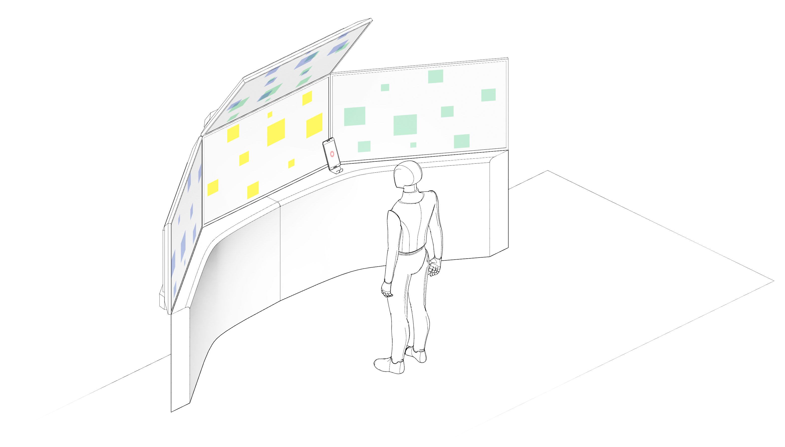

<!DOCTYPE html>
<html lang="en">
  <head>
    <meta name="description">
    <meta name="keywords" content="responsive, grid, system, web design">
    <meta name="author" content="responsive, grid, system, web design">
    <meta http-equiv="cleartype" content="on">
    <meta name="HandheldFriendly" content="True">
    <meta name="MobileOptimized" content="320">
    <meta name="viewport" content="width=device-width, initial-scale=1.0">
    <link rel="stylesheet" href="/assets/css/html5reset.css" media="all">
    <link rel="stylesheet" href="/assets/css/col.css" media="all">
    <link rel="stylesheet" href="/assets/css/2cols.css" media="all">
    <link rel="stylesheet" href="/assets/css/3cols.css" media="all">
    <link rel="stylesheet" href="/assets/css/4cols.css" media="all">
    <link rel="stylesheet" href="/assets/css/5cols.css" media="all">
    <link rel="stylesheet" href="/assets/css/6cols.css" media="all">
    <link rel="stylesheet" href="/assets/css/7cols.css" media="all">
    <link rel="stylesheet" href="/assets/css/8cols.css" media="all">
    <link rel="stylesheet" href="/assets/css/9cols.css" media="all">
    <link rel="stylesheet" href="/assets/css/10cols.css" media="all">
    <link rel="stylesheet" href="/assets/css/11cols.css" media="all">
    <link rel="stylesheet" href="/assets/css/12cols.css" media="all">
    <link rel="stylesheet" href="/assets/css/style.css">
    <link rel="stylesheet" href="/assets/css/animate.css">
    <link rel="stylesheet" type="text/css" href="/assets/css/component.css">
    <link rel="stylesheet" type="text/css" href="/assets/css/glslEditor.css">
    <link rel="stylesheet" type="text/css" href="/assets/css/codeCanvas.css">
    <link rel="stylesheet" type="text/css" href="https://maxcdn.bootstrapcdn.com/font-awesome/4.4.0/css/font-awesome.min.css">
    <title>Jaskirat Portfolio   </title><script src="/assets/js/modernizr.custom.js"></script>
  </head>
</html>
<body>
  <div id="st-container" class="st-container">
    <div class="st-pusher">
      <nav id="menu-7" class="st-menu st-effect-7">
        <h2 class="icon icon-lab logo"><span>JASKIRAT R </span></h2>
<ul class="menu">
  <li><a href="/" class="hvr-underline-from-center">Home</a></li>
  <li><a href="/projects/" class="hvr-underline-from-center">Projects</a></li>
  <li><a href="/about/" class="hvr-underline-from-center">About</a></li>
  <li><a href="http://jaskiratr.tumblr.com" class="hvr-underline-from-center">Blog </a></li>
</ul>
      </nav>
      <div class="st-content">
        <div class="main clearfix">
          <div id="st-trigger-effects" class="column"><a id="nav-toggle" href="#" data-effect="st-effect-7"><span></span></a></div>
        </div>
        <div class="st-content-inner">
          <div class="width_80">
            <div class="section group header">
              <div class="col span_1_of_3 logo"><a href="http://jaskirat.me"><span>JASKIRAT R </span></a></div>
              <div class="col span_3_of_2 topNav">
<ul class="menu">
  <li><a href="/" class="hvr-underline-from-center">Home</a></li>
  <li><a href="/projects/" class="hvr-underline-from-center">Projects</a></li>
  <li><a href="/about/" class="hvr-underline-from-center">About</a></li>
  <li><a href="http://jaskiratr.tumblr.com" class="hvr-underline-from-center">Blog </a></li>
</ul>
              </div>
            </div>
            <div class="section group subheader">
              <h1>Stickie</h1><br>
              <h3>
                <p>Device Supported Sticky Notes</p>
              </h3><br><p>Stickie is a mobile device centric collaborative system. The project utilizes physical space as a valuable medium for people to digitally annotate their environment. Stickie incorporates the smartphone as an extension of the human body to spatially interact with visual content.</p>
<p>It folds the user experience of digital smartphones and monitor screens into one analog note making process, which allows people to physically post multimedia content from phones onto multiple surfaces.</p>
<p><style>.embed-container { position: relative; padding-bottom: 56.25%; height: 0; overflow: hidden; max-width: 100%; } .embed-container iframe, .embed-container object, .embed-container embed { position: absolute; top: 0; left: 0; width: 100%; height: 100%; }</style><div class='embed-container'><iframe src='https://player.vimeo.com/video/167916496' frameborder='0' webkitAllowFullScreen mozallowfullscreen allowFullScreen></iframe></div></p>
<h4 id="-span-relevant-links-span-"><span>Relevant Links</span></h4>
<ul>
<li><a href="http://stickie.jaskirat.me/">Process Blog </a></li>
<li><a href="http://stickie.space">Web Application </a></li>
<li><a href="https://github.com/jaskiratr/stickieWeb">Website Source Code</a></li>
<li><a href="https://github.com/jaskiratr/Stickie-Code">Android Source Code</a></li>
<li><a href="https://github.com/jaskiratr/Stickie-Code/tree/master/Android%20Apk">Android App Apk</a></li>
</ul>
<p></p>
<!-- 
<div class="section group">
<div class="col span_1_of_2">
    
</div>
<div class="col span_1_of_2">
<p>Multiple prototypes were built to understand the spatial grammar for user interactions. The prototypes asked the participants to complete a certain task like picking up a virtual item and moving it or writing on a surface, all by using gestures. Observations were made in parallel to understand the user behavior with the system within a given space.</p>
</div>
</div>


<div class="section group">
<div class="col span_1_of_2">
<p>Above: The system diagram depicting the various components involved for indoor positioning of the device and final representation of the information.</p>
<p>Right: Screencapture of indoor positioning data of the mobile device. The system binds the orientation data from the mobile phone and skeleton tracking from a Microsoft Kinect Sensor. 
</p>
</div>
<div class="col span_1_of_2">
    
</div>
</div>

<style>.embed-container { position: relative; padding-bottom: 56.25%; height: 0; overflow: hidden; max-width: 100%; } .embed-container iframe, .embed-container object, .embed-container embed { position: absolute; top: 0; left: 0; width: 100%; height: 100%; }</style><div class='embed-container'><iframe src='https://player.vimeo.com/video/150319691' frameborder='0' webkitAllowFullScreen mozallowfullscreen allowFullScreen></iframe></div>

<div class="section group">
<div class="col span_1_of_2">
    
    
</div>
<div class="col span_1_of_2">
<p>After testing out the prototypes which used Kinect and phone for indoor positioning, it was observed that the users had trouble establishing hand and eye coordination while putting content on the screens.</p>
<p>
The latest work in progress shown in the bottom left is a series of photos of how phone positioning works on a large screen. The back facing camera on the phone communicates continuously with the computer, therefore, generating a color pattern on the screen. The phone relays the color of the section and the computer recreates a grid within that section. Through several iterations of this process the system can locate the position of the phone on the screen within an accuracy of 4 pixels.</p>

<p>This is similar to how NES Zapper works for Duck Hunt Game (1984). Read more about <a href="http://www.howtogeek.com/181303/htg-explains-how-the-nintendo-zapper-worked-and-why-it-doesnt-work-on-new-tvs/">_here_.</a></p>
</div>
</div> -->
            </div>
            <div class="section group footnote">
              <hr>
              <div class="iconSet"><a href="http://www.github.com/jaskiratr" target="_blank"><i class="fa fa-github-square fa-lg"></i></a><a href="http://www.vimeo.com/jaskiratr" target="_blank"><i class="fa fa-vimeo-square fa-lg"></i></a><a href="http://www.jaskiratr.tumblr.com" target="_blank"><i class="fa fa-tumblr-square fa-lg"></i></a><a href="http://www.linkedin.com/in/jaskiratr" target="_blank"><i class="fa fa-linkedin-square fa-lg"></i></a></div>
            </div>
          </div>
        </div>
      </div>
    </div>
  </div>
<script src="/assets/js/jquery.min.js"></script>
<script src="/assets/js/masonry.pkgd.js"></script>
<script src="/assets/js/imagesloaded.pkgd.js"></script>
<script src="/assets/js/index.js"></script>
<script src="/assets/js/classie.js"></script>
<script src="/assets/js/sidebarEffects.js"></script>
<script src="/assets/js/tracking.js"></script>
<script src="/assets/js/glslEditor.js"></script>
<script src="/assets/js/glslEditorFooter.js"></script>
</body>